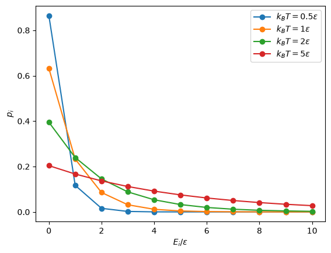

Partisjonsfunksjonen og molekylær energi#
Læringsmål
Etter å ha arbeidet med dette kapitlet skal du kunne:
forklare hva partisjonsfunksjonen forteller oss
sette opp og beregne partisjonsfunksjonen for enkle systemer med bestemte energinivåer
forklare forskjellen mellom partisjonsfunksjonen \(Q\) for et helt system og den molekylære partisjonsfunksjonen \(q\)
forklare hvorfor uavhengige energibidrag gjør at en molekylær partisjonsfunksjon kan faktoriseres
forklare betydningen av skjelnbare og ikke-skjelnbare partikler i opptellingen av mikrotilstander
forklare hvordan \(U\), \(S\) og \(C_V\) kan beregnes fra partisjonsfunksjonen
I forrige kapittel kom vi fram til Boltzmann-fordelingen
Fordelingen sier at én bestemt mikrotilstand med lav energi vanligvis er mer sannsynlig enn én bestemt mikrotilstand med høy energi. Figuren nedenfor viser hvordan sannsynligheten \(p_i\) for en mikrotilstand avhenger av energien \(E_i\), ved fire forskjellige temperaturer. Hver prikk representerer én mikrotilstand i den enkle modellen. Linjene mellom prikkene er bare trukket for å gjøre utviklingen lettere å se.
Energien er ikke oppgitt i joule, men i enheter av \(\varepsilon\), som leses «epsilon». Her er \(\varepsilon\) energiforskjellen mellom to nabopunkter i modellen. At \(E_i/\varepsilon=3\) på den horisontale aksen, betyr derfor at mikrotilstanden har energien \(E_i=3\varepsilon\). Symbolet \(\varepsilon\) er ikke en ny fysisk konstant, men bare en energienhet vi har valgt for denne modellen.
Produktet \(k_\mathrm{B}T\) har også enhet energi og gir en energiskala basert på temperatur. Kurvene sammenlikner denne energiskalaen med \(\varepsilon\). Når \(k_\mathrm{B}T/\varepsilon\) er liten, koster det relativt mye energi å gå opp til neste mikrotilstand. Sannsynligheten er derfor konsentrert om de laveste energiene.
Når \(k_\mathrm{B}T/\varepsilon\) øker, blir energiforskjellen mellom nabotilstandene mindre viktig, og fordelingen blir flatere. Mikrotilstander med høyere energi får da større sannsynlighet. Når temperaturen endres, flyttes altså ikke energiene i modellen. Det er sannsynlighetene for de ulike mikrotilstandene som endres.

Når vi bare sammenlikner to mikrotilstander, faller \(Q\) bort
Vi trenger derfor ikke \(Q\) for å finne forholdet mellom to sannsynligheter. Skal vi finne selve sannsynlighetene, trenger vi derimot \(Q\).
Partisjonsfunksjonen har to viktige oppgaver. Først gjør den Boltzmann-vektene om til sannsynligheter som summerer til 1. I tillegg samler den informasjon om energinivåene og temperaturen. Når vi kjenner \(Q\), kan vi derfor beregne flere målbare egenskaper uten å følge hver enkelt mikrotilstand i detalj.
Kapitlet i et nøtteskall
Energiene til et system forteller hvilke mikrotilstander det kan ha. Temperaturen bestemmer hvor stor Boltzmann-vekt hver mikrotilstand får. Partisjonsfunksjonen \(Q\) er summen av disse vektene. Når vi deler hver vekt på \(Q\), får vi sannsynlighetene. Den samme partisjonsfunksjonen kan deretter brukes til å beregne indre energi, entropi og varmekapasitet.
Når gjelder Boltzmann-fordelingen?#
Boltzmann-fordelingen beskriver et system som er i termisk likevekt med et stort varmereservoar. Systemet kan ta opp og avgi energi, mens temperaturen holdes konstant.
For et system med konstant antall partikler \(N\), volum \(V\) og temperatur \(T\), men der energien kan variere, bruker vi det kanoniske ensemblet. Dette er den fysiske situasjonen Boltzmann-fordelingen beskriver:
For å regne på systemet kan vi forestille oss mange kopier med samme \(N\), \(V\) og \(T\), men med ulike øyeblikkelige energier. Hvis 20 prosent av kopiene befinner seg i mikrotilstand \(i\), tolker vi dette som at sannsynligheten for mikrotilstanden er \(p_i=0{,}20\). Du kan lese mer om ensembler.
Statistisk ensemble
Et statistisk ensemble er en tenkt samling av mange identiske kopier av det samme systemet. Kopiene beskrives med de samme betingelsene, men kan befinne seg i ulike mikrotilstander.
Ensemblet er et tanke- og regneverktøy. Vi lager ikke fysisk mange kopier av systemet; kopiene hjelper oss å tolke sannsynligheter og gjennomsnittsverdier.
Systemet kan være stort eller lite. Det kan for eksempel være en hel gassprøve, men det kan også være ett enkelt molekyl som kan utveksle energi med et reservoar. Kopiene representerer da det samme molekylet i ulike translasjonelle, rotasjonelle, vibrasjonelle eller elektroniske tilstander. Dette leder til den molekylære partisjonsfunksjonen \(q\).
Partisjonsfunksjonen#
For å finne sannsynlighetene til de ulike mikrotilstandene må vi først summere Boltzmann-vektene til alle mikrotilstandene. Denne summen kalles partisjonsfunksjonen.
Kanonisk partisjonsfunksjon
Sannsynligheten for mikrotilstand \(i\) er
Boltzmann-vektene \(e^{-E_i/k_\mathrm{B}T}\) summerer ikke nødvendigvis til 1. Derfor er de ikke sannsynligheter ennå. Når vi derimot deler hver vekt på summen \(Q\), får vi sannsynligheter som til sammen er lik 1.
Partisjonsfunksjonen er altså ikke selv en sannsynlighet, men en størrelse som normaliserer Boltzmann-vektene slik at vi deretter kan finne sannsynligheten for hver mikrotilstand.
Hvilket system gjelder \(Q\) for?
Energiene \(E_i\) og partisjonsfunksjonen \(Q\) må beskrive det samme systemet. Hvis \(E_i\) er energiene til ett molekyl, gjelder sannsynlighetene og gjennomsnittsenergien dette molekylet. Hvis \(E_i\) er energiene til hele prøven, gjelder \(Q\), \(U\) og \(S\) for hele prøven.
Den molekylære partisjonsfunksjonen#
Det er ofte nyttig å starte med ett enkelt molekyl når vi skal beskrive partisjonsfunksjonen. Vi bruker da symbolet \(\varepsilon_i\) for energien til molekylets mikrotilstand \(i\), og skriver partisjonsfunksjonen med liten bokstav \(q\).
Molekylær partisjonsfunksjon
Den molekylære partisjonsfunksjonen er partisjonsfunksjonen for ett molekyl:
Summen går over de tilgjengelige mikrotilstandene til molekylet.
Energien til et molekyl kan bestå av flere bidrag. Når vi kan behandle disse bidragene som uavhengige, kan vi skrive
Da faktoriserer også Boltzmann-faktoren:
Dermed kan den molekylære partisjonsfunksjonen skrives som et produkt
Dette er nyttig fordi vi kan undersøke de ulike energiformene hver for seg og deretter sette bidragene sammen.
Fra ett molekyl til \(N\) molekyler#
La oss nå gå fra ett molekyl til en prøve med \(N\) molekyler. Vi antar først at molekylene ikke vekselvirker, slik at energien til hele systemet er summen av energiene til de enkelte molekylene:
Hvis de \(N\) delsystemene kan skilles fra hverandre, faktoriserer også partisjonsfunksjonen:
For identiske molekyler i en gass må vi imidlertid være litt mer forsiktige med opptellingen.
Skjelnbare og ikke-skjelnbare partikler
Partikler er skjelnbare dersom vi i modellen kan holde rede på hvilken partikkel som er hvilken. Da gir en ombytting av to partikler en ny mikrotilstand.
Identiske molekyler i en gass behandles derimot som ikke-skjelnbare: En ren ombytting av to identiske molekyler representerer ikke en ny fysisk tilstand.
Uttrykket \(q^N\) teller alle ombyttinger som om de var forskjellige. For \(N\) identiske molekyler finnes det \(N!\) slike permutasjoner, og vi ville derfor overtelle mikrotilstandene med en faktor \(N!\). For en klassisk, fortynnet gass av identiske molekyler uten vekselvirkninger får vi derfor
Faktoren \(N!\) er altså ikke et ekstra energibidrag. Den korrigerer selve opptellingen av mikrotilstander når molekylene er identiske.
Underveisoppgave
Et system har tre mikrotilstander med energiene \(E_0=0\), \(E_1=2{,}0\times10^{-21}\ \mathrm{J}\) og \(E_2=4{,}0\times10^{-21}\ \mathrm{J}\). Temperaturen er \(T=300\ \mathrm{K}\), og \(k_\mathrm{B}=1{,}381\times10^{-23}\ \mathrm{J/K}\).
a) Regn ut Boltzmann-faktoren \(e^{-E_i/k_\mathrm{B}T}\) for hver mikrotilstand.
b) Regn ut partisjonsfunksjonen \(Q\).
c) Regn ut sannsynligheten \(p_i\) for hver mikrotilstand. Kontroller at sannsynlighetene summerer til 1, og forklar hvorfor grunntilstanden er mest sannsynlig.
Løsningsforslag
Først beregner vi den termiske energiskalaen
a) Boltzmann-faktorene blir
b) Partisjonsfunksjonen er summen av vektene
c) Sannsynlighetene er vektene delt på \(Q\)
Summen er 1, som den må være fordi systemet befinner seg i én av de tre mikrotilstandene. Grunntilstanden er den mest sannsynlige enkeltmikrotilstanden fordi den har lavest energi og størst Boltzmann-faktor. Et helt energinivå med høyere energi kan likevel få stor samlet sannsynlighet dersom nivået består av mange mikrotilstander.
Når flere mikrotilstander har samme energi#
Som vi så i introduksjonskapitlet, kan flere mikrotilstander ha samme energi. Da sier vi at energinivået er degenerert.
Hvis et energinivå med energi \(E_j\) består av \(g_j\) mikrotilstander, kalles \(g_j\) degenerasjonen til nivået. Alle de \(g_j\) mikrotilstandene har samme Boltzmann-vekt
Det samlede bidraget fra energinivået blir derfor
Vi kan dermed summere over energinivåene i stedet for å skrive ett ledd for hver mikrotilstand
I den første formelen løper indeksen \(i\) over mikrotilstandene. I den siste formelen løper \(j\) over energinivåene.
Energi og degenerasjon trekker i hver sin retning. Høy energi gir mindre Boltzmann-vekt. Stor degenerasjon betyr at mange mikrotilstander bidrar med den samme vekten. Først undersøker vi energigapet i en modell uten degenerasjon. Deretter bruker vi en enkel to-nivåmodell til å se hvordan degenerasjon påvirker den samlede sannsynligheten.
Tillatte energinivåer (t)
5
Sum av Boltzmann-vektene (Q)
-
Prøv selv: hva forteller \(Q\)?
Gjør energigapet stort sammenliknet med \(k_\mathrm{B}T\). Hvilke energinivåer bidrar merkbart til \(Q\)?
Gjør energigapet mindre. Hva skjer med Boltzmann-vektene og \(Q\)?
Endres antallet tillatte energinivåer når temperaturen endres?
Hvorfor kan \(Q\) øke selv om antallet energinivåer er uendret?
Hva er forskjellen på en Boltzmann-vekt og en sannsynlighet?
Løsningsforslag
Ved stort energigap bidrar hovedsakelig grunntilstanden. Når gapet blir mindre sammenliknet med \(k_\mathrm{B}T\), får de eksiterte nivåene større vekt, og \(Q\) øker. Temperaturen endrer ikke hvilke energinivåer som finnes. Den endrer bare vektene deres. En Boltzmann-vekt blir først en sannsynlighet når vi deler den på summen \(Q\).
Eksempel: et degenerert eksitert nivå
Tenk deg et system med to energinivåer. Grunntilstanden har energi \(0\) og består av én mikrotilstand. Det eksiterte nivået ligger \(\Delta\varepsilon\) høyere i energi og består av tre mikrotilstander med samme energi, altså \(g_1=3\).
Partisjonsfunksjonen er
Her bruker vi stor \(P\) for den samlede sannsynligheten til et energinivå. Symbolet \(p_i\) brukes om sannsynligheten for én bestemt mikrotilstand.
Sannsynligheten for grunntilstanden er
Den samlede sannsynligheten for det eksiterte nivået er
Ved lav temperatur dominerer grunntilstanden fordi den har lavest energi. Ved høy temperatur blir de fire mikrotilstandene omtrent like sannsynlige. Da går den samlede sannsynligheten for det eksiterte nivået mot \(3/4\), mens sannsynligheten for grunntilstanden går mot \(1/4\).
Eksemplet viser hvordan energi og degenerasjon konkurrerer. Det eksiterte nivået ligger høyere i energi, men det kan realiseres gjennom flere mikrotilstander.
Underveisoppgave
Ved hvilken temperatur er den samlede sannsynligheten for det eksiterte nivået lik sannsynligheten for grunntilstanden?
Hvorfor går ikke sannsynligheten for grunntilstanden mot null ved høy temperatur?
Hva blir høytemperaturgrensen dersom det eksiterte nivået i stedet har degenerasjonen \(g=5\)?
Løsningsforslag
De to nivåene er like sannsynlige når
Lik sannsynlighet betyr mer eksplisitt at den samlede sannsynligheten for det eksiterte nivået er lik sannsynligheten for grunntilstanden:
Partisjonsfunksjonen \(Q\) står på begge sider og kansellerer. Derfor er betingelsen ganske enkelt
Dette gir
På den dimensjonsløse temperaturaksen tilsvarer dette
Grunntilstanden er fortsatt én av de fire mulige mikrotilstandene og får derfor sannsynligheten \(1/4\) ved høy temperatur. Med \(g=5\) går den samlede sannsynligheten for det eksiterte nivået mot \(5/6\), mens sannsynligheten for grunntilstanden går mot \(1/6\).
Indre energi fra partisjonsfunksjonen#
Så langt har vi brukt partisjonsfunksjonen til å finne sannsynlighetene for mikrotilstandene. Den samme partisjonsfunksjonen kan også brukes til å beregne målbare størrelser. Vi begynner med den indre energien.
Systemet skifter stadig mellom mikrotilstander med forskjellige energier. Den indre energien \(U\) er derfor ikke energien til én bestemt mikrotilstand. Den er gjennomsnittet av energiene til alle mikrotilstandene.
Mikrotilstander med stor sannsynlighet skal bidra mer til gjennomsnittet enn mikrotilstander med liten sannsynlighet. Derfor ganger vi hver energi \(E_i\) med sannsynligheten \(p_i\)
Energiene, sannsynlighetene og partisjonsfunksjonen må beskrive det samme systemet. Symbolet \(\langle E\rangle\) betyr gjennomsnittsverdien av energien. Du kan lese mer i 6.2 Forventningsverdi.
Setter vi inn Boltzmann-fordelingen
får vi
Dette uttrykket kan brukes direkte. Det finnes også en annen nyttig måte å finne \(U\) på. Partisjonsfunksjonen endres med temperaturen, og denne endringen forteller hvordan gjennomsnittsenergien endres.
Når energinivåene ikke selv avhenger av temperaturen, får vi
Indre energi fra \(Q\)
Den deriverte beskriver hvordan \(\ln Q\) endres når temperaturen endres, mens volumet og partikkeltallet holdes faste. Du trenger ikke følge utledningen for å forstå resten av kapitlet.
Hvor kommer uttrykket for \(U\) fra?
Vi starter med partisjonsfunksjonen
Når energiene \(E_i\) ikke avhenger av \(T\), får vi ved derivasjon
Vi trekker faktoren \(1/(k_\mathrm{B}T^2)\) utenfor summen
Fra uttrykket for den indre energien har vi
Dermed kan vi skrive
Siden
får vi
Simuleringen nedenfor viser hvordan sannsynlighetene bestemmer plasseringen av gjennomsnittsenergien \(U\). Den viser også hvordan varmekapasiteten endres når energifordelingen endres.
Indre energi og varmekapasitet fra en Boltzmann-fordeling
Søylehøydene viser de normaliserte sannsynlighetene pn. Den stiplede linjen viser gjennomsnittsenergien U.
Indre energi, U / Δε
-
Varmekapasitet, CV / kB
-
Her er CV bestemt av hvor raskt U endres med T.
Prøv selv: indre energi og varmekapasitet
Gjør \(\Delta\varepsilon/k_\mathrm{B}T\) stor. Hvilken mikrotilstand dominerer, og hvor ligger \(U\)?
Gjør \(\Delta\varepsilon/k_\mathrm{B}T\) mindre. Hva skjer med sannsynlighetene og \(U/\Delta\varepsilon\)?
Finn omtrent hvor \(C_V/k_\mathrm{B}\) er størst. Hvorfor er varmekapasiteten liten i begge ender av glideren?
Hvorfor kan \(U\) ligge mellom energinivåene når systemet alltid har én av de tillatte energiene?
Hva er forskjellen på energien til én kopi og gjennomsnittsenergien til hele ensemblet?
Løsningsforslag
Når energigapet er stort sammenliknet med \(k_\mathrm{B}T\), dominerer grunntilstanden, og \(U\) ligger nær null. Når gapet blir mindre, øker sannsynligheten for de eksiterte nivåene. Da øker også \(U/\Delta\varepsilon\).
Varmekapasiteten er størst når en temperaturendring flytter mye sannsynlighet mellom energinivåene. Ved svært lav temperatur er nesten bare grunntilstanden okkupert. Ved svært høy temperatur er de fem nivåene allerede nesten likt okkupert. I begge grensene endres \(U\) lite når temperaturen endres, og \(C_V\) blir liten.
At \(C_V\) går mot null ved høy temperatur, skyldes at denne enkle modellen bare har fem energinivåer. Reelle molekyler har mange flere nivåer. Senere skal vi se at slike systemer kan nærme seg en klassisk, ikke-null verdi for varmekapasiteten.
\(U\) er et gjennomsnitt og trenger ikke være en tillatt mikrotilstandsenergi. Én kopi har alltid én bestemt energi. Ensemblegjennomsnittet kan ligge mellom energinivåene.
Fordypning: energifluktuasjoner og varmekapasitet
I det kanoniske ensemblet kan varmekapasiteten også skrives ved spredningen i energien
Uttrykket i telleren er variansen til energien. Simuleringen beregner dette uttrykket for de fem energinivåene. Varmekapasiteten blir stor når flere energier har merkbar sannsynlighet og fordelingen endres tydelig med temperaturen.
Entropi fra partisjonsfunksjonen#
Partisjonsfunksjonen bestemmer sannsynlighetene. Derfor inneholder den også informasjon om entropien. For det kanoniske ensemblet får vi
Entropi fra \(Q\)
Dette er ikke en ny definisjon av entropi. Uttrykket kommer fram når vi setter Boltzmann-fordelingen inn i Gibbs-entropien. Størrelsene \(Q\), \(U\) og \(S\) må beskrive det samme systemet.
Resultatet viser at vi kan gå direkte fra energinivåene til termodynamiske størrelser: Energinivåene gir \(Q\), og fra \(Q\) kan vi beregne både \(U\) og \(S\).
Utledning av uttrykket for \(S\)
Vi starter med Boltzmann-fordelingen
Tar vi den naturlige logaritmen, får vi
Dette setter vi inn i Gibbs-entropien
Da får vi
Vi kjenner igjen de to summene
Dermed får vi
Test deg selv
Et system har tre mikrotilstander med samme energi, \(E_i=0\).
Beregn partisjonsfunksjonen \(Q\).
Beregn den indre energien \(U\).
Bruk
til å finne \(S/k_\mathrm{B}\).
Hvordan kan systemet ha entropi selv om den indre energien er null?
Løsningsforslag
Siden alle tre mikrotilstandene har energi null, er alle Boltzmann-faktorene lik 1:
Den indre energien er
og dermed
Entropien er ikke et mål på hvor stor energien er. Den beskriver hvordan sannsynligheten er fordelt mellom mulige mikrotilstander. Her finnes det tre like sannsynlige mikrotilstander, og derfor er entropien større enn null selv om vi har valgt energien til alle tre som null.
Ekvipartisjon og varmekapasitet#
Vi har sett hvordan partisjonsfunksjonen gir den indre energien \(U\). Varmekapasiteten forteller hvor mye den indre energien øker når temperaturen øker.
Ved konstant volum er
På molekylnivå handler varmekapasitet derfor om hvilke former for energi molekylene kan lagre når temperaturen øker. Energien kan blant annet fordeles på translasjon, rotasjon og vibrasjon.
For systemer som kan beskrives med klassisk statistisk mekanikk gir ekvipartisjonsteoremet en enkel regel: Hvert uavhengige, kvadratiske energiledd bidrar i gjennomsnitt med
til den indre energien.
Et kvadratisk energiledd er et energibidrag som avhenger av kvadratet av en variabel. Et eksempel er bevegelsesenergien i \(x\)-retning,
Vi skal nå se hvordan slike energiledd oppstår fra translasjon, rotasjon og vibrasjon, og hvordan de til sammen bestemmer varmekapasiteten.
Translasjonell (kinetisk) energi#
Et eksempel er bevegelsesenergien i \(x\)-retning:
Den translasjonelle (kinetiske) energien til en partikkel med masse \(m\) og fart \(v\) er gitt ved:
I tre dimensjoner kan vi skrive:
der hvert ledd er kvadratisk i en hastighetskomponent.
Ifølge ekvipartisjonsteoremet bidrar hvert kvadratisk ledd med
slik at den gjennomsnittlige kinetiske energien per partikkel blir
Rotasjonell energi#
For rotasjonsbevegelse er den kinetiske rotasjonsenergien til et stivt legeme gitt ved:
der \(I\) er treghetsmomentet og \(\omega\) er vinkelhastigheten.
For et molekyl med flere rotasjonsfrihetsgrader, for eksempel et lineært molekyl med to rotasjonsakser, kan vi skrive
Hvert kvadratisk rotasjonsledd bidrar også med \(\frac12 k_B T\) ifølge ekvipartisjonsteoremet. For et lineært molekyl (to rotasjonsfrihetsgrader) får vi dermed
mens et ikke-lineært molekyl (tre rotasjonsfrihetsgrader) får
Vibrasjonell energi#
Et annet eksempel på et kvadratisk energiledd er den vibrasjonelle energien. For en harmonisk vibrasjon er den potensielle energien gitt ved Hookes lov
der \(k\) er fjær- eller kraftkonstanten til bindingen og \(x\) er avviket fra likevektsposisjonen.
Fra klassisk mekanikk vet vi at vibrasjonen også har en kinetisk energi
Den totale vibrasjonsenergien blir derfor
Begge leddene er kvadratiske og bidrar derfor med
ifølge ekvipartisjonsteoremet. En vibrasjonsmodus bidrar dermed totalt med
Eksempel: et diatomisk molekyl
For et ideelt, lineært diatomisk molekyl teller vi de kvadratiske energileddene:
tre translasjonelle ledd gir til sammen \(3k_\mathrm{B}T/2\)
to rotasjonelle ledd gir til sammen \(k_\mathrm{B}T\)
én vibrasjonsmodus har ett kinetisk og ett potensielt ledd og gir til sammen \(k_\mathrm{B}T\)
Hvis alle disse energiformene oppfører seg klassisk, får vi per mol
og dermed
Her ser vi bort fra elektroniske eksitasjoner og fra en eventuell konstant nullpunktsenergi. Slike konstante energibidrag endrer ikke varmekapasiteten.
Ekvipartisjon for polyatomære molekyler#
Et molekyl med \(N_{\rm atomer}\) atomer har totalt
mekaniske frihetsgrader, siden hvert atom kan bevege seg i tre romlige retninger.
Disse fordeles mellom translasjon, rotasjon og vibrasjon.
Translasjon: Alle molekyler har 3 translasjonsfrihetsgrader.
Rotasjon: Lineære molekyler har 2 rotasjonsfrihetsgrader, mens ikke-lineære molekyler har 3.
Vibrasjon: De resterende frihetsgradene beskriver vibrasjonsmoduser.
For lineære molekyler er antallet vibrasjonsmoduser
mens ikke-lineære molekyler har
Når alle energiformene kan behandles klassisk, bidrar translasjon med \(3k_\mathrm{B}T/2\), rotasjon med \(f_{\rm rot}k_\mathrm{B}T/2\), og hver vibrasjonsmodus med \(k_\mathrm{B}T\).
Den gjennomsnittlige energien per molekyl blir derfor
Eksempler: diatomiske og ikke-lineære molekyler
For et lineært diatomisk molekyl, for eksempel \(N_2\), får vi
3 translasjonelle kvadratiske energiledd
2 rotasjonelle kvadratiske energiledd
Når vibrasjonen er utfrosset, bidrar dermed fem kvadratiske energiledd:
For et ikke-lineært molekyl som \(H_2O\) har vi
3 translasjonelle kvadratiske energiledd
3 rotasjonelle kvadratiske energiledd
3 vibrasjonsmoduser, som hver gir to kvadratiske energiledd
Hvis alle vibrasjonene også oppfører seg klassisk, får vi derfor totalt
kvadratiske energiledd, og dermed
Når fungerer ikke den klassiske opptellingen?#
På molekylnivå er energien kvantisert. Derfor er ikke alle energiformer nødvendigvis aktive ved en gitt temperatur. Det avgjørende er energigapet \(\Delta\varepsilon\) sammenliknet med \(k_\mathrm{B}T\):
Hvis \(\Delta\varepsilon\ll k_\mathrm{B}T\), blir mange energinivåer merkbart okkupert, og bidraget nærmer seg den klassiske verdien
Hvis \(\Delta\varepsilon\gg k_\mathrm{B}T\), er de eksiterte nivåene lite sannsynlige, og energiformen bidrar lite til varmekapasiteten
Vi sier da at energiformen er utfrosset.
Vibrasjonelle energigap er ofte mye større enn rotasjonelle energigap. For diatomiske idealgasser som \(N_2\) og \(O_2\) er vibrasjonsbidraget derfor i stor grad utfrosset ved romtemperatur. Når translasjon og rotasjon oppfører seg tilnærmet klassisk, får vi omtrent
Test deg selv
Tenk på ett mol \(N_2\)-gass ved en temperatur der translasjon og rotasjon kan behandles klassisk, mens vibrasjonen er utfrosset. Bruk \(R=8{,}314\ \mathrm{J\,mol^{-1}\,K^{-1}}\).
Hvor mange kvadratiske energiledd bidrar til den indre energien?
Finn den molare varmekapasiteten \(C_{V,\mathrm{m}}\).
Hva blir \(C_{V,\mathrm{m}}\) dersom vibrasjonen også blir klassisk?
Hvorfor bidrar vibrasjonen lite ved lavere temperaturer?
Løsningsforslag
Et lineært molekyl har tre translasjonelle og to rotasjonelle kvadratiske energiledd. Det gir totalt fem bidrag på \(R/2\):
Én vibrasjonsmodus har både et kinetisk og et potensielt kvadratisk energiledd. Når vibrasjonen også kan behandles klassisk, kommer derfor ytterligere to bidrag på \(R/2\):
Ved lavere temperaturer er energigapet mellom de vibrasjonelle nivåene stort sammenliknet med \(k_\mathrm{B}T\). De eksiterte vibrasjonstilstandene får derfor liten sannsynlighet, og vibrasjonen bidrar lite til varmekapasiteten.
I neste kapittel ser vi nærmere på hvordan translasjon, rotasjon og vibrasjon påvirker energien og varmekapasiteten til gasser.
Interaktiv visning av hvordan translasjon, rotasjon og vibrasjon fryser ut ved lavere temperatur
Translasjon
Rotasjon
Vibrasjon
Bidrag til CV
3/2 R
Prøv selv: utfrysning av energiformer
Senk temperaturen. Hvilket bidrag avtar først: vibrasjon, rotasjon eller translasjon?
Forklar rekkefølgen ved hjelp av energigapene.
Simuleringen viser tydelige trinn. Hvorfor endres en målt \(C_V(T)\) vanligvis mer gradvis?
Sammenlikn en enatomig og en diatomisk gass ved romtemperatur. Hvilke energiformer bidrar?
Løsningsforslag
Vibrasjonsbidraget avtar først fordi vibrasjonsnivåene vanligvis har størst energigap. Rotasjonsbidraget avtar ved lavere temperatur, mens translasjonsnivåene ligger svært tett. De virkelige sannsynlighetene endres kontinuerlig med temperaturen. Derfor er «på» og «av» bare en forenklet framstilling av grenseverdiene.
Oppgaver#
Oppgave 1: Partisjonsfunksjon
Et system har de faste, ikke degenererte energiene \(E_0=0\), \(E_1=\varepsilon\) og \(E_2=2\varepsilon\). Undersøk systemet ved en temperatur der \(\varepsilon/k_\mathrm{B}T=1\).
Beregn \(Q\)
Beregn \(p_0\), \(p_1\) og \(p_2\)
Kontroller at sannsynlighetene summerer til 1
Beregn \(U/(k_\mathrm{B}T)\)
Løsningsforslag
Sannsynlighetene er omtrent \(0{,}665\), \(0{,}245\) og \(0{,}090\). Gjennomsnittsenergien blir
Oppgave 2: Energi og degenerasjon
Et grunntilstandsnivå har \(E_0=0\) og \(g_0=1\). Et eksitert nivå har den faste energien \(E_1=\Delta E\) og degenerasjonen \(g_1=4\). Undersøk systemet ved en temperatur der \(\Delta E/k_\mathrm{B}T=2\).
Sammenlikn én bestemt eksitert mikrotilstand med grunntilstanden
Beregn \(Q\)
Beregn samlet sannsynlighet for det eksiterte nivået
Forklar hvorfor degenerasjonen må tas med
Løsningsforslag
For én bestemt mikrotilstand er forholdet
Partisjonsfunksjonen er
Den samlede sannsynligheten for det eksiterte nivået er
Degenerasjonen må tas med fordi det eksiterte energinivået består av fire forskjellige mikrotilstander med samme energi.
Oppgave 3: Gibbs-entropi
Et system har sannsynlighetene \(p=(1/2,1/4,1/4)\).
Beregn \(S/k_\mathrm{B}\)
Sammenlikn med en jevn fordeling over tre mikrotilstander
Hvilken fordeling har størst entropi, og hvorfor?
Løsningsforslag
Den jevne fordelingen gir
Den jevne fordelingen har størst entropi fordi sannsynligheten er fordelt jevnere over mikrotilstandene.
Oppgave 4: Fra \(Q\) til \(U\) og \(S\)
Et ikke degenerert to-nivåsystem har \(E_0=0\) og \(E_1=\Delta E\).
Sett opp \(Q\)
Finn \(p_1\) og \(U\)
Bruk \(S=k_\mathrm{B}\ln Q+U/T\) til å finne entropien
Undersøk grensene \(T\to0\) og \(T\to\infty\)
Løsningsforslag
Systemet har to mikrotilstander, så partisjonsfunksjonen har to ledd
Sannsynligheten for den eksiterte tilstanden er Boltzmann-vekten delt på \(Q\)
Grunntilstanden har energi null og bidrar derfor ikke til gjennomsnittsenergien. Den indre energien blir
Entropien finner vi ved å sette \(Q\) og \(U\) inn i uttrykket fra kapitlet
Ved lav temperatur er \(\Delta E/k_\mathrm{B}T\) stor, og \(e^{-\Delta E/k_\mathrm{B}T}\) går mot null. Da går \(Q\) mot 1, slik at \(\ln Q\) går mot null. Samtidig går \(p_1\) mot null, og dermed også \(U\). Eksponentialfunksjonen avtar raskere enn \(1/T\) vokser, så \(U/T\) går også mot null. Til sammen gir dette
Det er som forventet. Ved svært lav temperatur er systemet nesten alltid i grunntilstanden, og bare én mikrotilstand er tilgjengelig.
Ved høy temperatur er \(\Delta E\) liten sammenliknet med \(k_\mathrm{B}T\), og \(e^{-\Delta E/k_\mathrm{B}T}\) går mot 1. Da blir \(Q\to2\) og \(p_0\to p_1\to1/2\). Den indre energien går mot \(\Delta E/2\), som er en endelig verdi, så \(U/T\) går mot null. Dermed blir
Dette stemmer med Gibbs-entropien for to like sannsynlige mikrotilstander
Oppgave 5: Varmekapasitet
Sammenlikn helium og \(N_2\) som ideelle gasser.
Finn \(C_{V,\mathrm m}\) for helium
Finn \(C_{V,\mathrm m}\) for \(N_2\) når rotasjon bidrar klassisk og vibrasjon er utfrosset
Hva nærmer \(C_{V,\mathrm m}\) for \(N_2\) seg når vibrasjonen også blir klassisk?
Forklar hvorfor overgangen er gradvis
Løsningsforslag
Helium har tre translasjonelle kvadratiske energiledd og får
For \(N_2\) bidrar også to rotasjonelle kvadratiske ledd, slik at
Når den ene vibrasjonsmodens kinetiske og potensielle energiledd begge blir klassiske, nærmer verdien seg
Overgangen er gradvis fordi Boltzmann-sannsynlighetene for de vibrasjonelle nivåene endres kontinuerlig med temperaturen.
Oppgave 6: Et molekyl i et temperaturbad
En lukket kyvette med en fortynnet løsning av fluorescerende molekyler står i et stort vannbad med konstant temperatur. Vi bruker løsningen i kyvetten som system.
Hva fungerer som system og varmereservoar?
Hvilke størrelser holdes faste i den kanoniske modellen?
Hvorfor kan molekylets energi variere selv om temperaturen er konstant?
Hva representerer andelen molekyler i en bestemt mikrotilstand i et stort ensemble?
Løsningsforslag
Løsningen i den lukkede kyvetten er systemet, mens vannbadet er varmereservoaret. I modellen er antallet molekyler \(N\), volumet \(V\) og temperaturen \(T\) faste. Energien kan variere når løsningen utveksler energi med vannbadet. Andelen molekyler i en bestemt mikrotilstand tilsvarer sannsynligheten \(p_i\) for denne mikrotilstanden.
Oppgave 7: Fra ett delsystem til mange
Et idealisert system består av \(N\) uavhengige delsystemer. Hvert delsystem er knyttet til sin egen faste plass i et materiale og har partisjonsfunksjonen \(Q_1=1+3e^{-\Delta\varepsilon/k_\mathrm{B}T}\).
Sett opp partisjonsfunksjonen \(Q_N\) for hele systemet
Forklar hvorfor partisjonsfunksjonene kan multipliseres
Hvorfor er det viktig at delsystemene har faste plasser?
Løsningsforslag
For uavhengige delsystemer på faste plasser er
Energien til hele systemet er summen av energiene til delsystemene. Derfor blir Boltzmann-faktoren for hele systemet produktet av Boltzmann-faktorene til delsystemene, og partisjonsfunksjonene multipliseres.
De faste plassene gjør at delsystemene kan skilles fra hverandre. Da svarer hver kombinasjon av tilstander til én egen mikrotilstand, og opptellingen i \(Q_1^N\) blir riktig.
Videre til gasser#
Vi har nå verktøyet som trengs for å gå fra kvantiserte energier til sannsynligheter og termodynamiske gjennomsnitt. I neste kapittel bruker vi dette på gasser: Først på fordelingen av molekylhastigheter og trykk, og deretter på molekylære frihetsgrader, varmekapasitet og avvik fra idealgassmodellen.